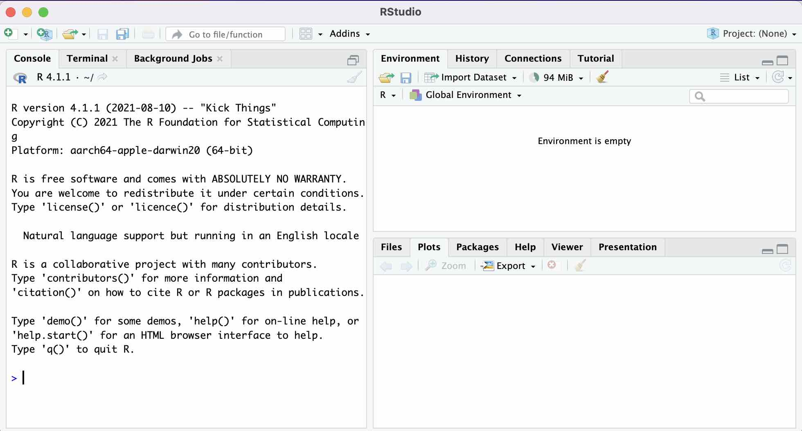
2 Basic Use of RStudio
2.1 Very Basics
2.1.1 Open RStudio Desktop
You may open R and use it directly through its own GUI, but many people find using R through RStudio more intuitive and easier than using R directly. When you use RStudio, you don’t need to open R. Just open RStudio only, as it also quietly starts R behind its GUI. Let’s open RStudio. Then, you will see the following GUI.
In R, we have our work done by executing a command. We enter a command after the > prompt in the R Console, and then, the command will be executed by R.
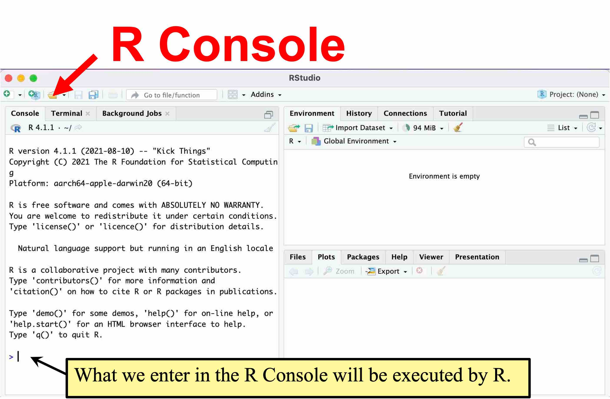
In RStudio, we can also choose a menu from its GUI, and RStudio translates our input into a command and execute it in the R Console. Let’s see an example by reading the datasets we will use in this class.
2.1.2 Datasets Used in POL232
I prepared the datasets you will use in this class in the RData format, which is available on the class Quercus site. Go to the class Quercus site and download the following file to your computer (remember where you downloaded it).
POL232.RDataLet’s open POL232.RData in RStudio.
2.1.3 Load Datasets to RStudio: load()
We use a menu from GUI of RStudio to load POL232.RData to RStudio. First, choose an open folder icon on the Environment tab on the upper right pane of RStudio.

Then, locate POL232.RData on your computer and choose it to open. In the following figure, I have located POL232.RData in the TEMP folder on my Desktop. Note, however, that the location where you have downloaded POL232.RData is different from mine.

Then, the content of POL232.RData appears in the upper right pane of RStudio. As you can see, POL232.RData includes five datasets named anes2020, ces2019, ipe2020, ipe2015, and usstates2010. The datasets are stored in the format called data frame in R. So I will call these datasets data frames onward. To learn more about these data frames, see the codebooks available on the class Quercus site.
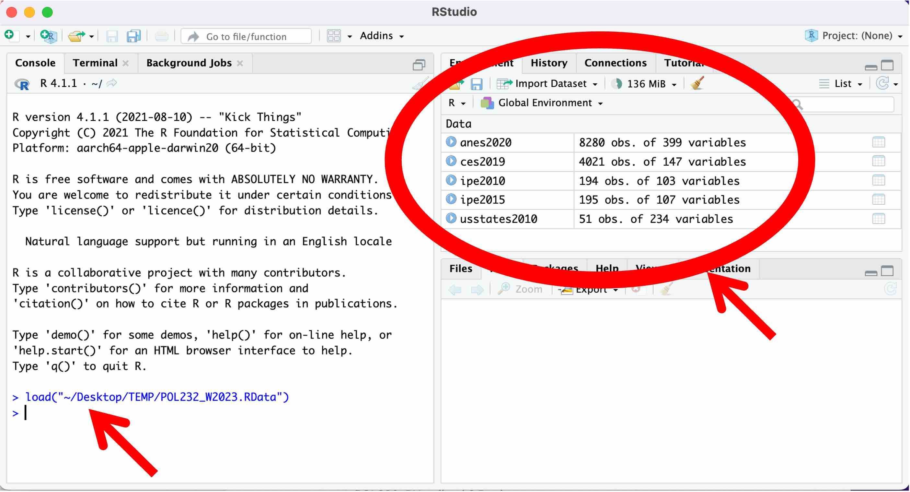
As you can see on the left pane of RStudio (see the red arrow), when we chose POL232.RData to open, RStudio translated this action into an R command and executed in the R Console. The commands used in R consist of R functions. An R function mostly takes the form of function.name(...), and we input arguments in the ... within the parentheses.
In the above example, to open POL232.RData, RStudio executed the load() function which takes the name and location (a file path) of the file as its argument (recall that an argument refers to what we specify in the parentheses of R functions). As you can see in the above figure, RStudio used the following code to open POL232.RData.
load("~/Desktop/TEMP/POL232.RData")2.1.4 Browse Data Frame: View()
Let’s browse a data frame by entering a command in the R console directly. You may use the View() function for this purpose. Include the name of the data frame you want to browse as argument; i.e., include it inside ().
View(ces2019)Then, the data frame specified will be open at the upper left pane as shown below.
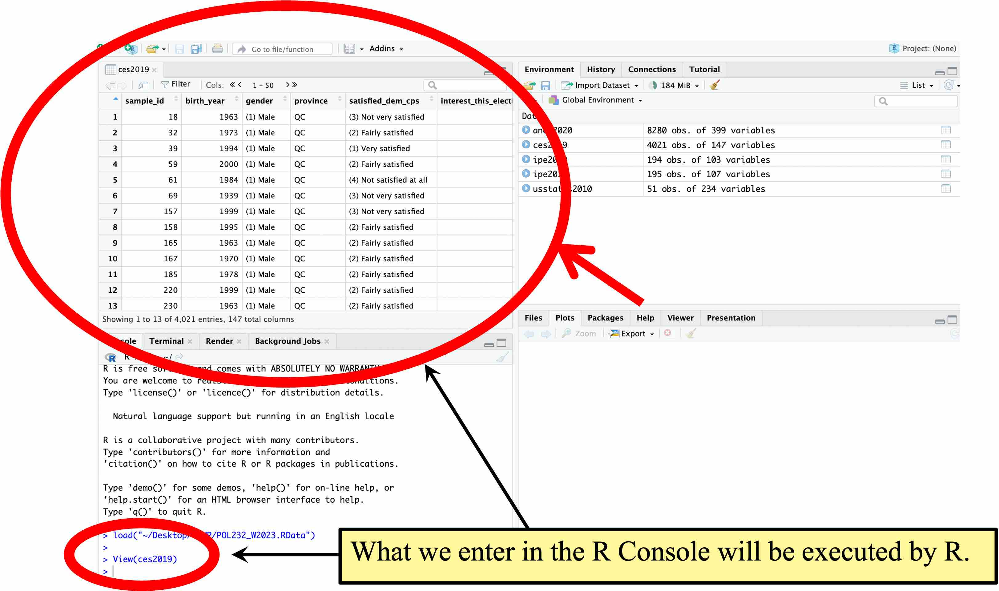
An alternative to typing in View(ces2019) in the R console is to click ces2019 in the Environment tab at the upper right pane. 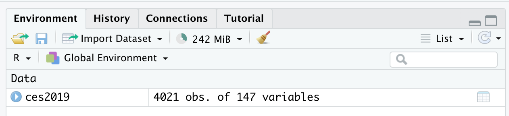 Then, RStudio will execute View(ces2019) for you to open the data frame in the upper left pane.
You may browse the data frame in this way. As you can see, the data frame is structured such that each row corresponds to each observation (in this case, each respondent of the survey) and each column corresponds to each variable. See ces2019_codebook.pdf for the description of the variables included in ces2019.
I’d suggest you browse other data frames such as anes2020 and ipe2010. Try both typing in the View() function directly in the R console and clicking the name of a data frame on the Environment tab on the upper right pane.
2.1.5 Getting Help for Functions: help() or ?
If you need help for a function, you may use the help() function with the name of your function of interest in the parentheses or ? operator followed by the name of the function. Try help(View) and ? View. Both of them will open the help window for View() on the lower right pane of RStudio.
help(View)
? View
Whenever you have a question about the usage of a specific function, you may use the help() function or the ? operator. If the explanation in the help menu is unclear to you, you may post your question on the Discussions Board of the class Quercus site.
2.2 R Script
When you conduct an analysis in R, you should write a series of functions in an R script file and save it.
Let’s look at a simple example. Go to the class Quercus site and download the following file.
POL232_R_Lab1_Example1.RPOL232_R_Lab1_Example1.R is an R script. The file extension .R is used for R scripts. Open this R script file in RStudio by choosing “File” \(\rightarrow\) “Open File…” from the menu bar or clicking the open folder icon () at the upper left corner. (Make sure you do NOT click the open folder icon () at the Environment tab on the upper right pane, because you cannot open an R script from there. Note that if you hover your cursor over the open folder icon at the upper left corner, the following message, “Open an existing file,” should appear as shown below. If you hover your cursor over the icon at the Environment tab on the upper right, the description to appear is “Load Workspace.”)

Then, this R script appears in the top left window of RStudio.
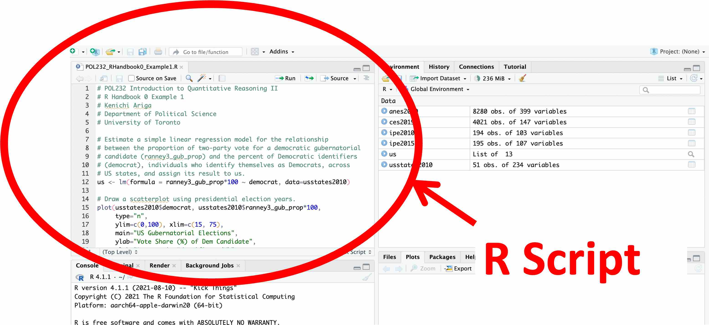
POL232_R_Lab1_Example1.R contains functions to draw a scatterplot using the usstates2010 data frame. Don’t worry about these functions for now. You will learn how to draw a similar scatterplot later in the semester.
2.2.1 Execute Functions from an R Script
If you write a series of functions in an R script like this one, you can easily repeat your analysis. From an R script file, you can execute the functions.
In POL232_R_Lab1_Example1.R, go to a line or highlight a line (or a set of lines), and then press Ctrl + Enter in Windows or Command + Return in Mac. Then, the functions chosen will be implemented in the R Console. Alternatively, you may click the “Run” icon (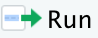).
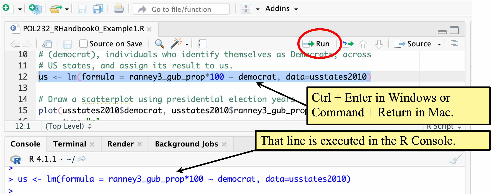
If you execute all the functions in POL232_R_Lab1_Example1.R, RStudio will draw the following scatterplot on the lower right pane.
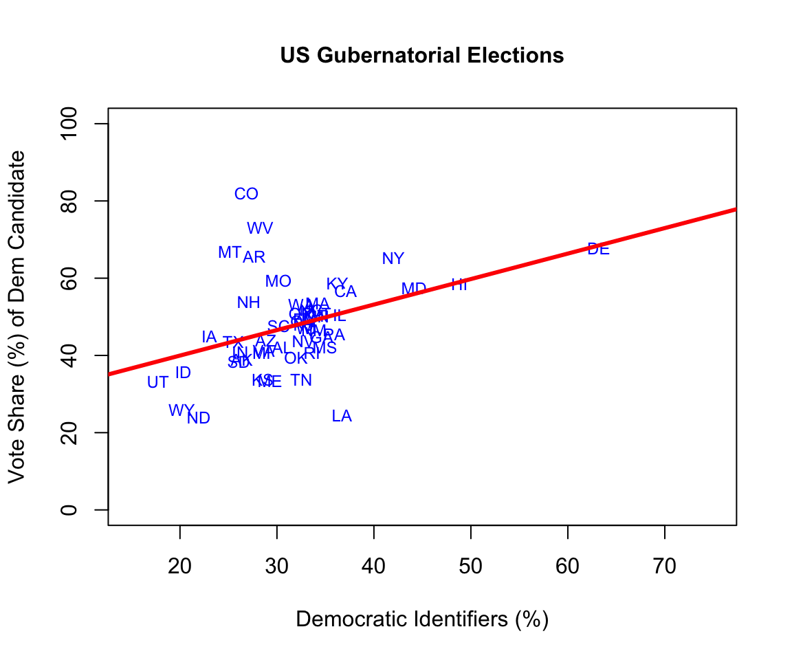
2.2.2 Write Comments After #
POL232_R_Lab1_Example1.R produced a scatterplot with a linear regression line for the relationship between the proportion of two-party vote share for a democratic gubernatorial candidate and the percent of Democratic identifiers, individuals who identify themselves as Democrats, across US states.
Below is a copy of this R script. As I suggested above, don’t worry about what these functions in the R script are doing. I am showing the content of the R script below only to explain how you can write comments in your R script file.
# Estimate a simple linear regression model for the relationship
# between the proportion of two-party vote share for a democratic gubernatorial
# candidate (ranney3_gub_prop) and the percent of Democratic identifiers
# (democrat), individuals who identify themselves as Democrats, across
# US states, and assign its result to the object named "us."
us <- lm(formula = ranney3_gub_prop*100 ~ democrat, data=usstates2010)
# Draw a scatterplot using presidential election years.
plot(usstates2010$democrat, usstates2010$ranney3_gub_prop*100,
type="n",
ylim=c(0,100), xlim=c(15, 75),
main="US Gubernatorial Elections",
ylab="Vote Share (%) of Dem Candidate",
xlab="Democratic Identifiers (%)",
cex.main=1.0, cex.lab=1.0, cex.axis=1.0)
text(x=usstates2010$democrat, y=usstates2010$ranney3_gub_prop*100,
usstates2010$st, col="blue", cex=0.75)
# Add a linear regression line.
abline(a=us$coefficients[1],b=us$coefficients[2],
col="red", lwd=3)In the above R script, you may notice that some descriptions are given after #. In an R script file, everything after # will not be executed by R. When R implements these functions, it ignores everything after #. Therefore, we can write comments after #.
I suggest you sufficiently annotate your R script using # so that you can understand what you did when you come back to work on your R project after a while.
2.2.3 Always Write an R Script
I suggest you always create an R script file, write functions and comments in this R script, and save this script when you conduct analysis in R, because this may be the most transparent and effective way to save and reproduce your analysis.
Therefore, in every R lab session, I will ask you to write an R script file and submit it to Quercus by the end of the lab session to earn a participation mark, so that you can develop the habit of writing R scripts.
2.3 Practic Writing an R Script
Let’s write a very simple R script to try some very basic (mathematical) operations in R.
2.3.1 How to Start a New R Script
You may start a new file by choosing “File” \(\rightarrow\) “New File” \(\rightarrow\) “R Script” from the menu bar (left in the image below) or simply clicking the “New File” icon ( ) and choose “R Script” (right in the image below).
) and choose “R Script” (right in the image below).
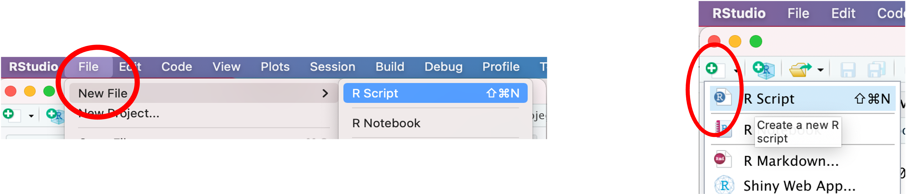
Once you create a new R script, you should of course save it. You can save it by choosing “File” from the pull down menu and then “Save As” (left in the image below) or clicking the save file icon (right in the image below).
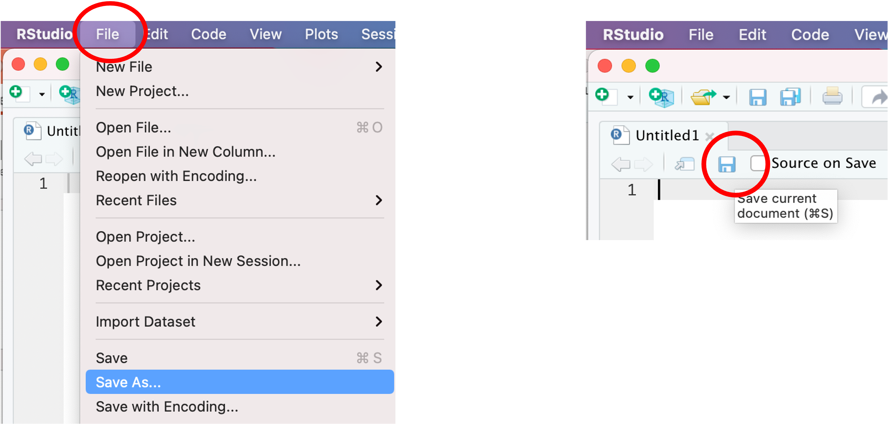
You should choose an informative name for your R script. For the current purpose, name your R script “POL232_Lab1_YourLastName.R.”
2.3.2 Very Basic Math
First, write the following mathematical operations in your R script and execute them from within the R script. See Section 2.2.1 if you forget how to run functions from within an R script.
1 + 5 # Addition
2 - 3 # Subtraction
4 * 7 # Multiplication
2735 / 45 # Division
2^4 # Exponents
sqrt(16) # Square root
abs(-5) # Absolute value
1:100 # Sequence of integers from 1 to 100Then, these mathematical operations will be carried out in the R Console. Each of them returns the output of the operation — for example, 6 for 1 + 5, and -1 for 2 - 3.
Recall that R ignores everything after #, so you can annotate your R script after #.
Next, write 5:100 as follows in your R script and execute it. You will get the output that follows — a sequence of numbers from 5 to 100.
5:100 # Sequence of integers from 5 to 100 [1] 5 6 7 8 9 10 11 12 13 14 15 16 17 18 19 20 21 22 23
[20] 24 25 26 27 28 29 30 31 32 33 34 35 36 37 38 39 40 41 42
[39] 43 44 45 46 47 48 49 50 51 52 53 54 55 56 57 58 59 60 61
[58] 62 63 64 65 66 67 68 69 70 71 72 73 74 75 76 77 78 79 80
[77] 81 82 83 84 85 86 87 88 89 90 91 92 93 94 95 96 97 98 99
[96] 100In the output, numbers in square brackets at the beginning of each line represent a position of the first entry of each line. As you see in the above output, 5 is the first entry of 5:100, and 24 is the 20th entry of 5:100, 43 is the 39th, and so forth.
2.3.3 Create a Variable Using the Assignment Operator (<-)
We can create a variable and assign a number or multiple numbers to this variable using the assignment operator, <-. First, let’s assign a single number to a variable.
For example, the following operation will assign the result of 1 + 5, which is 6, to a variable named y. Write this operation in your R script and then execute it (once again, see Section 2.2.1 if you forget how to run a function from within an R script).
y <- 1 + 5 # The assignment operator, <-, will assign the values on the right-hand-side
# to a variable named y.Typing in the variable name in the R Console will print its content. Try this.
y[1] 6It returns 6.
Now write the following operation in your R script and execute it to create a different variable x.
x <- 7Check its content by typing the variable name, x, in the R Console.
x[1] 7It returns 7. You can overwrite a variable by assigning a different number to the variable. Write the following operation in your R script and execute it.
x <- 10Now your x should be changed to 10. Type in x in the R Console to confirm.
x[1] 10You can apply mathematical operations on variables. For example, write the following operations — sqrt() to take a square root — in your R script and execute them.
y + x # Because y = 6 & x = 10, this is 16.[1] 16 sqrt(y + x) # This will take a square root of 16, which is 4.[1] 4You may assign the result of a mathematical operation on variables to another variable. Write the following operations in your R script and execute them.
z <- y + x # z will be the result of y + x. Since y = 6 and x = 10, z = 16.
z # Executing this from your R script is equivalent to typing in `z` into the R Console.[1] 162.3.4 See What’s in Your Workspace (= Working Memory): ls() or objects()
What you have created so far (called “objects”) in the current R session have been stored in the R’s working memory, called workspace. You can see what is available in your workspace by executing ls() or objects() without arguments (= nothing in the parentheses). objects() may be more intuitive because anything you construct in R is called an object.
Writ the following functions in your R script and execute them.
objects() # This function will list everything in your workspace.[1] "anes2020" "ces2019" "ipe2010" "ipe2015" "us"
[6] "usstates2010" "x" "y" "z" ls() # This function does the same thing as the objects() function.[1] "anes2020" "ces2019" "ipe2010" "ipe2015" "us"
[6] "usstates2010" "x" "y" "z" You can also see what’s stored in your workspace at the Environment tab at the upper right pane.
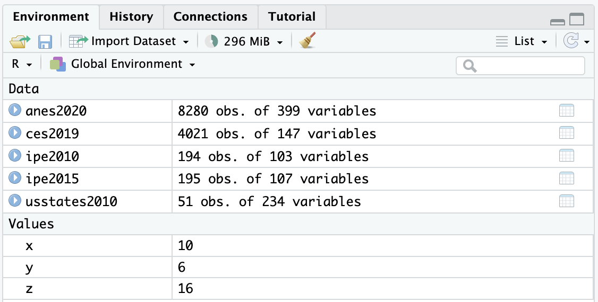
Note that everything you created and stored in your workspace will be gone, once you quit R. This is fine, as you can always recreate the objects you created in the current R session easily by running the functions recorded in your R script.
2.3.5 Remove a Variable from Your Workspace: remove() or rm()
If you want to remove or erase a variable from your workspace, use remove() or its abbreviation rm(). For example, remove(x) or rm(x) will erase x from your workspace. Write the following function in your R script and execute it.
remove(x) # This function will remove the variable `x` from your workspace.Type in x in the R Console to see that this variable is not available anymore. The error message will suggest that the variable x cannot be found.
2.3.6 Remove Everything: remove(list=ls()) or rm(list=ls())
If you want to remove everything from your workspace, you may use the following function. Write this function in your R script and execute it.
remove(list=ls()) # This will erase everything from your workspace.Run objects() or ls() to see that everything is gone. character{0} means there is nothing in your workspace.
ls()character(0)Make sure you save your R script. This R script may be used as your reference in your later work.
2.4 When You Quit R: quit() or q() — Don’t Save Workspace Images
You may quit R by typing quit() or q() in the R Console or choose “File” \(\rightarrow\) “Quit Session…”
quit()
q()When you quit, you may be asked the following question.
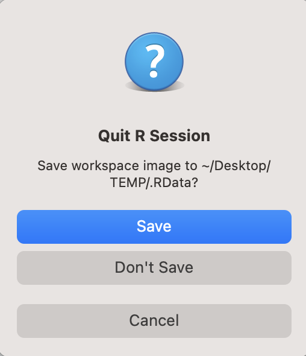
If you are NOT asked this question, then that is fine. You can skip the following. Since this question is no longer asked in the recent versions of RStudio Desktop, you may not see this question when you quit your R session.
However, I want to give the following explanations in case you encounter this question when you quit your R session, because this is a default behaviour of R, which is run quietly behind RStudio. There may be an occasion in which you will see this question.
By clicking “Save,” you can save all your R session in a workspace image (.RData file) and can open it the next time you start R.
However, I do NOT recommend using this option. It is much better to record all your work in an R script and replicate all your work by executing the R script.
Using R scripts allows you to correct your mistakes easily, and all the steps of your work will be transparent. You may also allow others to replicate your work by running your R script.
Always choose “Don’t Save” when you quit R and write an R script instead.